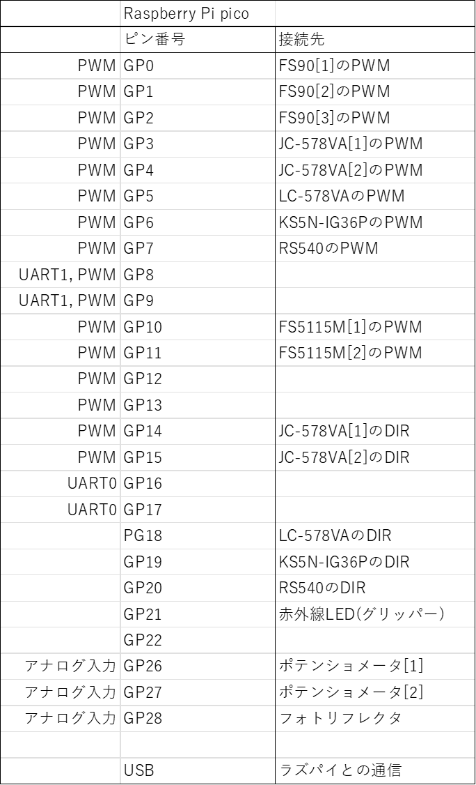
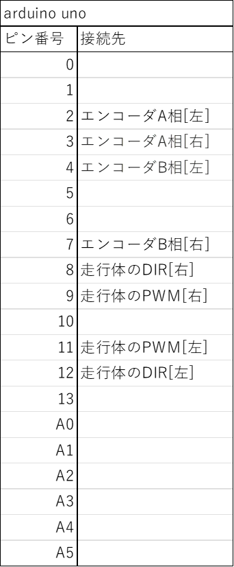

名称
10月5日ミーティング議事録
番号
MIRS2405-MEMO-0010
版数
最終更新日
作成
承認
改訂記事
A01
2024.10.8
宇佐見祥
初版
目次
1.会議情報
2.レビュー内容
1.会議情報
日時
令和6年10月5日
開催場所
teams
出席者
宇佐見祥,清拓実,上原涼介,仲谷天芽,平沢快斗,松浦純
レビュー教員
香川 真人先生
会議内容
開発進捗の確認・GPIOピンの検討
2.ミーティング内容
2.1.各開発項目の進捗確認
メカ
ロボットアームや走行体部分の詳細設計は完了し、現在レビュー待ち。
エレキ
電源の回路設計は完了。プリント基板加工用の配線パターンの作成がまだ。
ソフト
3自由度のアーム制御プログラムは作成中。
Arduino - Raspberry Pi 間の通信はPCにてテスト済み。実機での検証待ち。
2.2.GPIOピンの検討
現時点で必要なPWM信号が10本であり、加えてエンコーダの信号入力やモータの回転方向制御信号なども考えるとArduino 2台では対応できないことが分かった。
そこで、新たにRaspberry Pi picoを購入し、ArduinoとRaspberry Pi picoそれぞれを1台ずつ使用することになった。
Arduinoでは走行用のモータの制御のみを行い、Raspberry Pi picoでそれ以外のロボットアーム用モーターなどを制御する。
Raspberry Pi picoのGPIO対応表

Arduino UNOのIO対応表

MIRS2405ドキュメント管理台帳へ